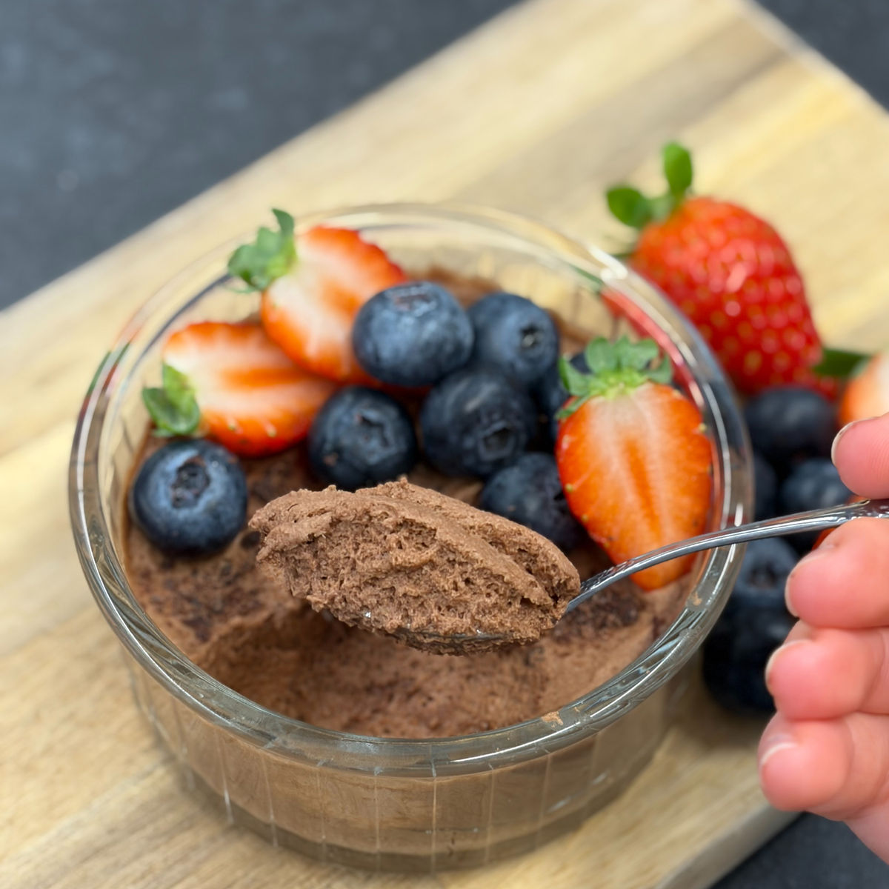
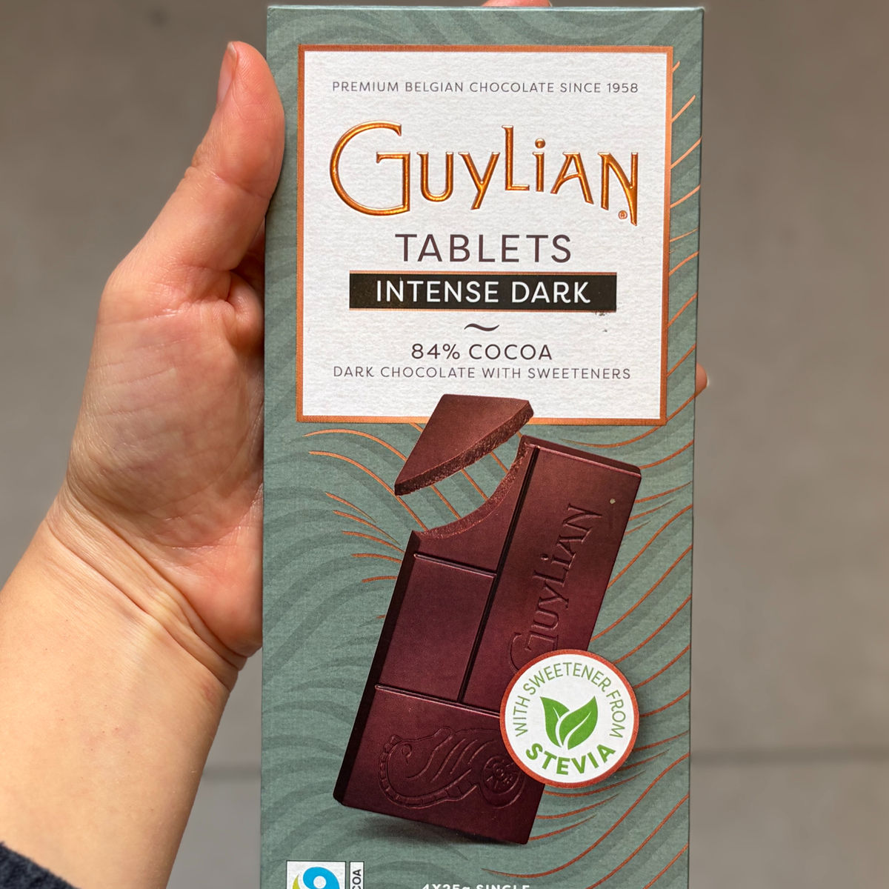

מוס שוקולד אישי מ-3 מרכיבים בלבד
עודכן: 12 במאי
טבלת ערכים תזונתיים בקירוב:
שימו לב שזו טבלה עבור ממתיק סוויטאנגו ושוקולד 84% ללא סוכר (השוקולד עם 17 גרם פחמימה ו-501 קלוריות ל100).
| ערכים | קערה (80 גרם) | 100 גרם |
|---|---|---|
| קלוריות | 145.8 | 182.2 |
| פחמימות | 4.5 | 5.6 |
| חלבונים | 5.9 | 7.3 |
הסיפור שמאחורי המוס: האמת? המתכון הזה נולד לגמרי בטעות.
הכל התחיל כשאמא שלי ביקשה שאכין לה ליום ההולדת גרסה מיוחדת לעוגת רולדה שוקולדית. הבקשה היחידה שלה הייתה שהקרם יהיה קליל וללא שמנות כבדות.
לקחתי את בלילת הרולדה המוכרת, שמרתי על האוויריות והחלפתי את טעמי הווניל בשוקולד עמוק. אחרי שהקרם יצא מהקירור, גיליתי שנוצר מוס מדהים, כיפי ודל בקלוריות! הבנתי מיד שזה לא רק מילוי לעוגה, אלא נשנוש מושלם בפני עצמו.

המתכון:
כמות: 80 גרם (קערה קטנה)
מרכיבים:
1 חלבון מביצה L או XL (אני השתמשתי בחלבון ששקל כ-40 גרם)
1 כף אבקת סוכר סוויטאנגו או 10 גרם דבש (שימו לב: דבש אינו מתאים לסוכרתיים ולקיטוגנים)
25 גרם שוקולד מריר (אני השתמשתי ב-84% ללא סוכר, ניתן להשתמש ב-90% או כל שוקולד אחר שאוהבים)
תוספות אפשריות :
ממולץ לבחור באחת ולא שילוב
1 כפית תמצית וניל
גרידת תפוז
מעט מלח
אבקת קפה נמס
הוראות הכנה:
חממו את השוקולד (במיקרוגל בפולסים קצרים או בבן-מארי) עד להמסה מלאה. שימו לב שהשוקולד לא יישרף. קררו מעט בטמפרטורת החדר.
הוסיפו לקערת החלבון את הממתיק (סוויטאנגו/דבש) ואת התוספת (אם בחרתם להוסיף אחת). הקציפו במיקסר עד לקבלת קצף לבן, מבריק ויציב מאוד.
העבירו כף מקציפת החלבונים אל תערובת השוקולד וקפלו בעדינות. לאחר מכן, העבירו את תערובת השוקולד אל שאר קציפת החלבונים וקפלו בעדינות עד לאיחוד (כדי לשמור על האווריריות).
העבירו את המוס לקערה והכניסו למקרר ל-4 שעות לפחות (מומלץ ללילה שלם) לייצוב מלא.
הערות:
שימו לב המתכון מכיל חלבון ביצה נא (כמו בקינוחים רבים אחרים, מרנג לפאי לימון, טרמיסו, מוס קלאסי וכו'), לתשומת לבכם.
רוב המתכונים באתר מבוססים על סוויטאנגו גרגרי. אם אין לכם אבקת סוכר סוויטאנגו בהישג יד, ניתן להשתמש בממתיק גרגרי כפי שהוא, או לטחון אותו קלות במכתש ועלי לקבלת מרקם עדין יותר. שימוש בממתיק גרגרי (ללא טחינה) עשוי להעניק למנה מרקם מעט מחוספס, אך התוצאה נשארת טעימה!
אם משתמשים בשוקולד עם אחוז מוצקי קקאו נמוך יותר (פחות מאזור ה-80%), הייתי ממליצה להשמיט את הממתיק כי השוקולד מספיק מתוק כשלעצמו.
סרטון מתהליך ההכנה:
לינק לסרטון קצר
תמונות מתהליך ההכנה:

השוקולד שבו השתמשתי במתכון